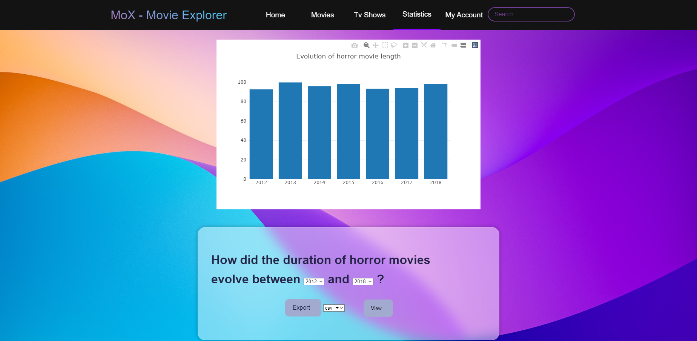

Movie Explorer MoX este un instrument Web de vizualizare si filtrare a filmelor/serialelor de pe platformele Netflix si Disney+, impreuna cu cateva statistici generate de acestea.
MoX a fost dezvoltat cu scopul de a ajuta oamenii sa caute filme pe baza unor criterii alese.
Aplicatia ofera posibilitatea de a cauta filme dupa nume (intr-un search bar), categorie, platforma de streaming pe care este disponibil filmul cautat. De asemenea, MoX permite vizitatorilor website-ului sa caute filme, sa se inregistreze/logheze si sa salveze la favorite filmele pe care deja le-au vizionat. In plus, utilizatorii logati pot sa vada statistici ce pot fi exportate in diferite formate (CSV, SVG, WebP ). Aplicatia prezinta diferite statistici precum: "Top 5 directori dupa suma lungimii tuturor filmelor", "Cum a evoluat distributia de filme horror intre Netflix si Disney+?" etc.
O alta functionalitate pe care o permite acest instrument Web este aceea de a descarca statisticile in diferite formate: CSV, WebP si SVG. Un utilizator isi poate salva filmele/serialele preferate alese in urma navigarii sale pe site-ul nostru.
Am creat un API REST la care se fac diferite request-uri, precum cele pentru login,register, generare de continut dinamic in pagina (afisarea filmelor si serialelor) cele referitoare la statistici, precum si cele care genereaza detaliile legate de utilizator: numele, filmele/serialele pe care le-a adaugat la favorite, dar si adaugarea sau stergerea lor din lista de favorite a utilizatorului disponibila la "My Account" si implicit si din baza de date. Am creat acest server utilizand modelul arhitectural MVC, model-view-controller. In models avem modelele cu ajutorul carora am creat si accesat tabelele din baza de date, in views avem scheletele HTML corespunzatoare paginilor din aplicatia noastra, iar in controllers avem controller-ele specifice rutelor din fiecare API.
Vizitatorul aplicatiiei Web poate sa isi creeze un cont, completand formularul necesar, dupa care va fi conectat la nou cont si redirectionat catre pagina principala.
Pentru a le oferi utilizatorilor siguranta, parolele sunt
hash-uite cu bcrypt.
Daca creearea contului a fost reusita, (utilizatorul nu a folosit un username care deja exista
in aplicatia noastra sau a introdus o parola care nu respecta specificatiile - 1 number, 1 uppercase, 1 lowercase and at least 8 characters),
acesta este obligat sa se autentifice pentru a beneficia de serviciile instrumentului nostru
Web.

Pagina de login asigura o modalitate utilizatorului de a se loga printr-un formular pentru ca acesta sa poata beneficia de serviciile instrumentului Web. Vizitatorul, care are deja un cont, poate completa informatiile valide in fomularul de conectare, dupa aceasta va fi redirectionat catre pagina principala (Home Page). In momentul in care utilizatorul se logheaza cu succes, un JSON Web Token este generat si salvat in localStorage. De asemenea utilizatorul poate apasa pe "Sign here!" pentru a fi redirectonat catre pagina de Sign in.

Pe pagina home apare butonul de login, si cateva filme/ seriale. La apasarea butonului See more, utilizatorul este redirectionat catre selection page.


Aceasta pagina poate fi accesata apasand pe STATISTICS, in bara de navigatie. Se poate face export de date in formatele mentionate mai sus.
